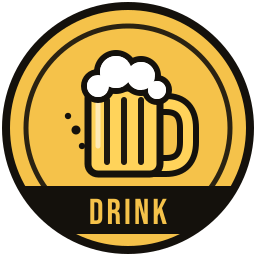
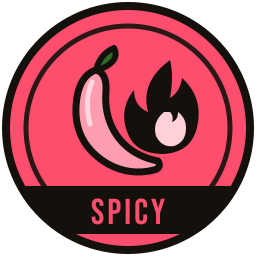
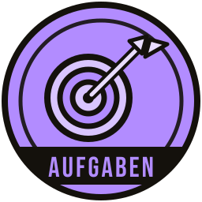

10
Der Klassiker
Zehn Becher, vier Reihen: so spielt man Bierpong.
Bierpong · Der Klassiker
Zwei Teams, ein Becherdreieck, ein Ball. Chlapf zählt mit und zeigt allen, wer vorne liegt.

Die App läuft im Browser und als Handy-App. Hier ein einzelnes Spiel mit Becher-Tracker und die Auswahl beim Start.


Gespielt wird klassisch mit 10 Bechern pro Seite. Für eine schnelle Runde gibt es zusätzlich die Variante mit 3 Bechern. Rot gegen Blau, genau wie im Becher-Tracker.
Zehn Becher, vier Reihen: so spielt man Bierpong.
Drei Becher, zwei Reihen, schnell entschieden.
Ein einzelnes Match ohne Turnierstruktur. Du tippst die Treffer, der Spielstand lässt sich auf dem TV oder auf Zuschauer-Handys mitverfolgen.
Mehrere Teams, Gruppen, KO-Runde, Tische und Siegerehrung. Alles dazu auf der Seite Turnier.
Wer es etwas wilder mag, schaltet den Spass-Modus ein. Bei Treffern erscheinen Challenges aus den Editionen, die ihr ausgewählt habt. Hier ein paar Beispiele.

Klassische Trink-Challenges.

Frech und flirty, aber nichts Explizites.

Kleine Mutproben und Aktionen.
Beim Erstellen wählt ihr die Hausregeln, die gelten sollen.

Teams, Tische, Resultate und Siegerehrung an einem Ort.

Karten raten, Pyramide, dann fährt jemand Bus.

Vier Asse laufen um den Sieg, ihr setzt Schlücke.

Challenges, Aufgaben, neue Regeln und Geheimaufträge.

Fragen vorlesen, wer's gemacht hat, trinkt.